from fastcore.all import *
from iomeval.readers import find_eval, load_evals, eval_url, get_report_urls
from mistocr.core import read_pgs
import pandas as pd
from iomeval.pipeline import run_pipeline, batch_run
pd.set_option('display.max_colwidth', None)models = [
'claude-sonnet-4-5',
'claude-sonnet-4-6',
'claude-opus-4-5-20251101'
]#DATA_PATH = Path('../../data')DATA_PATH = Path().home() / 'iomeval/data'#EVALS_PATH = Path('../files/test/evaluations.json')EVALS_PATH = Path().home() / 'iomeval/nbs/files/test/evaluations.json'evals = load_evals(EVALS_PATH)!ls ../../../tagapp/backups/20260311_115159/data06fd0949dc874f388686461c19d2669c.json 760568a15e144bcfb88dbbd50247dc51.json
0d4309b702e00faac631be8d609934ce.json 891448b7a4bf12763ea0579dd67e289d.json
1d7e6d2d445145d1d350b48b72b36681.json 8dd2261100ff5d714e73b411eed043d5.json
22cac1c000836253adc445993e101560.json 9992310969aa2f428bc8aba29f865cf3.json
316c47c9dc19c820f3217434d4b93b28.json a493c447cff3e03ca94024335d5c5c7a.json
4341695461234eee3deb51ac68871109.json dba9eb1220368d28682d8531108e767d.json
49d2fba781b6a7c0d94577479636ee6f.json e21305a89aeb76fafa8f4270392d463a.json
4c04ec0d3e651f7616190c6fc2dcfc18.json e8d9427f4a9094f68e17307faa567d8b.json
56e6f2bc9f55a0c6d07341ddde1283db.json f409b3f9a0671ec69a8591c425a45c1d.json
6c3c2cf3fa479112967612b0baddab72.json legacy
75bad4665ed458cce78740e3d86f72d0.json tagapp.db#LATEST_TAG_PATH = Path('../../../tagapp/backups/20260311_115159/data')LATEST_TAG_PATH = Path.home() / 'tagapp/backups/20260311_115159/data'Above we retrieve the id of the reports that are currently “tagged”. I have new versions of the prompts, and would like: - to re-run on this subset using the new version of the prompts - to create a new dialog where we want to monitor what changed by report themes, … maybe collecting statistics as percentage of increase/decrease score per theme id, theme, reports, …
Can we discuss the approach, steps we have to go through?
🤖Reply🤖
🧠🧠🧠🧠🧠🧠🧠🧠🧠🧠🧠🧠🧠🧠🧠🧠🧠🧠🧠🧠🧠🧠🧠🧠🧠🧠🧠🧠🧠🧠🧠🧠🧠🧠🧠🧠🧠🧠🧠🧠🧠🧠🧠🧠🧠🧠🧠🧠🧠🧠🧠🧠🧠
Great idea! Here’s how I’d break this down:
Phase 1: Re-run mappings with new prompts
- Backup current results — copy the 20 result JSONs from
data/results/somewhere safe (you already have the tagapp backup, but having the pipeline-side results too is useful) - Re-run mappings only — use
run_pipelineorbatch_runwithforce={'enbs','ccps','gcms','outs'}on just those 20 IDs, so it skips download/OCR/curation but re-does all LLM mapping steps - Save new results — they’ll overwrite in
data/results/as usual
Phase 2: Compare old vs new (new dialog)
- Load both result sets — old from the tagapp backup, new from
data/results/ - Per-mapping-type comparison — for each of
enbs,ccps,gcms,outs:- Match by
theme_idwithin each report - Compute score deltas (
new - old)
- Match by
- Aggregate statistics — e.g. mean/median score change per theme_id, per report, per mapping type; % of scores that increased/decreased/stayed same
- Visualize — heatmaps or tables showing which themes/reports shifted most
A few questions before we start:
- For Phase 1, do you want to re-run all four mapping types, or only specific ones (e.g. just GCMs)?
- For comparison, should we use the tagapp backup (
20260311_115159) as the “old” baseline, or do you also have the corresponding files indata/results/from before the prompt change?
def get_deployed_ids(backup_path):
"List of report IDs currently deployed (from tagapp backup)"
return Path(backup_path).ls(file_exts='.json').map(lambda p: p.stem)current_res = get_deployed_ids(LATEST_TAG_PATH)
current_res['8dd2261100ff5d714e73b411eed043d5', '1d7e6d2d445145d1d350b48b72b36681', '760568a15e144bcfb88dbbd50247dc51', '22cac1c000836253adc445993e101560', '4341695461234eee3deb51ac68871109', '9992310969aa2f428bc8aba29f865cf3', '316c47c9dc19c820f3217434d4b93b28', '0d4309b702e00faac631be8d609934ce', 'e8d9427f4a9094f68e17307faa567d8b', '75bad4665ed458cce78740e3d86f72d0', 'f409b3f9a0671ec69a8591c425a45c1d', 'dba9eb1220368d28682d8531108e767d', '56e6f2bc9f55a0c6d07341ddde1283db', '49d2fba781b6a7c0d94577479636ee6f', 'a493c447cff3e03ca94024335d5c5c7a', '06fd0949dc874f388686461c19d2669c', '6c3c2cf3fa479112967612b0baddab72', '891448b7a4bf12763ea0579dd67e289d', '4c04ec0d3e651f7616190c6fc2dcfc18', 'e21305a89aeb76fafa8f4270392d463a']def load_result(eval_id, base_path):
"Load a result JSON by eval_id from base_path"
return (Path(base_path)/f'{eval_id}.json').read_json()load_result('8dd2261100ff5d714e73b411eed043d5', DATA_PATH / 'results').keys()dict_keys(['id', 'report_url', 'meta', 'docs', 'curation_status', 'selected_headings', 'mappings', 'timestamp'])def is_remapped(eval_id, base_path, backup_path):
"Check if report mappings differ between current results and deployed backup"
current = load_result(eval_id, base_path)
deployed = load_result(eval_id, backup_path)
return current.get('mappings') != deployed.get('mappings')is_remapped('8dd2261100ff5d714e73b411eed043d5', DATA_PATH/'results', LATEST_TAG_PATH)Truetest_id = current_res[0]
test_id'8dd2261100ff5d714e73b411eed043d5'Tagging
#result = await batch_run(evals, ids=[test_id], base_path=str(DATA_PATH), force={'enbs','ccps','gcms','outs'})iomeval.pipeline - INFO - 8dd22611... completedresult = await batch_run(evals, ids=[test_id], base_path=str(DATA_PATH),
force={'enbs','ccps','gcms','outs'}, verbose=True, model=models[1])iomeval.pipeline - INFO - Mapping enablers...
iomeval.pipeline - INFO - Mapping CCPs...
iomeval.pipeline - INFO - Mapping GCM objectives...
iomeval.pipeline - INFO - Mapping outputs...
iomeval.pipeline - INFO - Pipeline complete!
iomeval.pipeline - INFO - 8dd22611... completed[d for d in current_res if not is_remapped(d, DATA_PATH/'results', LATEST_TAG_PATH)]['1d7e6d2d445145d1d350b48b72b36681',
'9992310969aa2f428bc8aba29f865cf3',
'316c47c9dc19c820f3217434d4b93b28',
'0d4309b702e00faac631be8d609934ce',
'dba9eb1220368d28682d8531108e767d',
'56e6f2bc9f55a0c6d07341ddde1283db',
'e21305a89aeb76fafa8f4270392d463a']def load_batch_run(base_path, n=1, timestamp=None):
"Load a batch run log by timestamp, or the n latest if None (1 returns single item, n>1 returns list)"
if timestamp is not None:
p = base_path / 'batch_runs' / f'{timestamp}.json'
return p.stem, p.read_json()
runs = sorted((base_path / 'batch_runs').ls())
if n == 1: return runs[-1].stem, runs[-1].read_json()
return [(p.stem, p.read_json()) for p in runs[-n:]]load_batch_run(DATA_PATH, n=2)[('2026-03-30_07-55',
{'completed': [],
'awaiting_curation': ['e44d4da3db4b05546ab895646ea887f7',
'451307f75ec691f785aae3fc561cb2c2',
'0b30d5ad03936002105b06b00fde286a',
'dcfe1190de68baba8c8159c0d21d4c83',
'e8c73b7846f7f67bb9c2d832965b099a',
'7bea93435fa1f151fa50a7a13d78164c',
'02f98b11fa245d4ce287abb546219143',
'4d81bab783f4d905bd1ed69311f07ba3',
'c74ce783caa0cef2b5edf412210d7da1',
'a21c76f7ab4d088e0566a918ef338a30'],
'failed': [],
'skipped': []}),
('2026-03-30_08-06',
{'completed': [],
'awaiting_curation': ['56cb2ae8cc6d4189929489eac1dd04ec',
'e0c42c400c7d9f73c764093cf49b9981',
'5619ac682e7d1d3c352b7ac06f85659c',
'9b57ca02a1ec0a59e588bb42d92d2c1f',
'0c83986d12b9d8a2aa0d7063a7823d4b',
'1faa0e0900f51b1204eb9d817c8fbf62',
'48af58ec756a347647ea362998185c83',
'2218e649cb281bbff45e44a540f950a4'],
'failed': [],
'skipped': []})]current_res[1:]['1d7e6d2d445145d1d350b48b72b36681', '760568a15e144bcfb88dbbd50247dc51', '22cac1c000836253adc445993e101560', '4341695461234eee3deb51ac68871109', '9992310969aa2f428bc8aba29f865cf3', '316c47c9dc19c820f3217434d4b93b28', '0d4309b702e00faac631be8d609934ce', 'e8d9427f4a9094f68e17307faa567d8b', '75bad4665ed458cce78740e3d86f72d0', 'f409b3f9a0671ec69a8591c425a45c1d', 'dba9eb1220368d28682d8531108e767d', '56e6f2bc9f55a0c6d07341ddde1283db', '49d2fba781b6a7c0d94577479636ee6f', 'a493c447cff3e03ca94024335d5c5c7a', '06fd0949dc874f388686461c19d2669c', '6c3c2cf3fa479112967612b0baddab72', '891448b7a4bf12763ea0579dd67e289d', '4c04ec0d3e651f7616190c6fc2dcfc18', 'e21305a89aeb76fafa8f4270392d463a']result = await batch_run(evals, ids=current_res[1:], base_path=str(DATA_PATH),
force={'enbs','ccps','gcms','outs'}, verbose=False, model='claude-sonnet-4-6')iomeval.pipeline - INFO - 99923109... completed
iomeval.pipeline - INFO - 316c47c9... completed
iomeval.pipeline - INFO - e21305a8... completed
iomeval.pipeline - INFO - 43416954... completed
iomeval.pipeline - INFO - 0d4309b7... completed
iomeval.pipeline - INFO - 6c3c2cf3... completed
iomeval.pipeline - INFO - 06fd0949... completed
iomeval.pipeline - INFO - a493c447... completed
iomeval.pipeline - INFO - 22cac1c0... completed
iomeval.pipeline - INFO - e8d9427f... completed
iomeval.pipeline - INFO - dba9eb12... completed
iomeval.pipeline - INFO - f409b3f9... completed
iomeval.pipeline - INFO - 760568a1... completed
iomeval.pipeline - INFO - 49d2fba7... completed
iomeval.pipeline - INFO - 56e6f2bc... completed
iomeval.pipeline - INFO - 4c04ec0d... completed
iomeval.pipeline - INFO - 891448b7... completed
iomeval.pipeline - INFO - 75bad466... completed
iomeval.pipeline - INFO - 1d7e6d2d... completedcurrent_res['8dd2261100ff5d714e73b411eed043d5', '1d7e6d2d445145d1d350b48b72b36681', '760568a15e144bcfb88dbbd50247dc51', '22cac1c000836253adc445993e101560', '4341695461234eee3deb51ac68871109', '9992310969aa2f428bc8aba29f865cf3', '316c47c9dc19c820f3217434d4b93b28', '0d4309b702e00faac631be8d609934ce', 'e8d9427f4a9094f68e17307faa567d8b', '75bad4665ed458cce78740e3d86f72d0', 'f409b3f9a0671ec69a8591c425a45c1d', 'dba9eb1220368d28682d8531108e767d', '56e6f2bc9f55a0c6d07341ddde1283db', '49d2fba781b6a7c0d94577479636ee6f', 'a493c447cff3e03ca94024335d5c5c7a', '06fd0949dc874f388686461c19d2669c', '6c3c2cf3fa479112967612b0baddab72', '891448b7a4bf12763ea0579dd67e289d', '4c04ec0d3e651f7616190c6fc2dcfc18', 'e21305a89aeb76fafa8f4270392d463a']DATA_PATH /'results'/f'{current_res[0]}.json'Path('../../data/results/8dd2261100ff5d714e73b411eed043d5.json')dest_dir = Path('../../../tagapp/tagapp/data')[Path('../../../tagapp/tagapp/data/8dd2261100ff5d714e73b411eed043d5.json'), Path('../../../tagapp/tagapp/data/1d7e6d2d445145d1d350b48b72b36681.json'), Path('../../../tagapp/tagapp/data/760568a15e144bcfb88dbbd50247dc51.json'), Path('../../../tagapp/tagapp/data/22cac1c000836253adc445993e101560.json'), Path('../../../tagapp/tagapp/data/legacy'), Path('../../../tagapp/tagapp/data/4341695461234eee3deb51ac68871109.json'), Path('../../../tagapp/tagapp/data/tagapp.db-wal'), Path('../../../tagapp/tagapp/data/tagapp.db'), Path('../../../tagapp/tagapp/data/9992310969aa2f428bc8aba29f865cf3.json'), Path('../../../tagapp/tagapp/data/316c47c9dc19c820f3217434d4b93b28.json'), Path('../../../tagapp/tagapp/data/0d4309b702e00faac631be8d609934ce.json'), Path('../../../tagapp/tagapp/data/e8d9427f4a9094f68e17307faa567d8b.json'), Path('../../../tagapp/tagapp/data/75bad4665ed458cce78740e3d86f72d0.json'), Path('../../../tagapp/tagapp/data/f409b3f9a0671ec69a8591c425a45c1d.json'), Path('../../../tagapp/tagapp/data/dba9eb1220368d28682d8531108e767d.json'), Path('../../../tagapp/tagapp/data/56e6f2bc9f55a0c6d07341ddde1283db.json'), Path('../../../tagapp/tagapp/data/49d2fba781b6a7c0d94577479636ee6f.json'), Path('../../../tagapp/tagapp/data/a493c447cff3e03ca94024335d5c5c7a.json'), Path('../../../tagapp/tagapp/data/06fd0949dc874f388686461c19d2669c.json'), Path('../../../tagapp/tagapp/data/6c3c2cf3fa479112967612b0baddab72.json'), Path('../../../tagapp/tagapp/data/891448b7a4bf12763ea0579dd67e289d.json'), Path('../../../tagapp/tagapp/data/4c04ec0d3e651f7616190c6fc2dcfc18.json'), Path('../../../tagapp/tagapp/data/tagapp.db-shm'), Path('../../../tagapp/tagapp/data/e21305a89aeb76fafa8f4270392d463a.json')]Write a small function to copy a list of ids that happends to be the stem of a {ids}.json file in a given directory to another directory?
Input/output tokens and API limits
| Per report (total) | Per report/min (~3.5 min avg) | Max parallel (Tier 2) | Max parallel (Tier 3) | |
|---|---|---|---|---|
| Input (non-cached) | ~31K tok | ~9K/min | 450K / 9K ≈ 50 | 800K / 9K ≈ 89 |
| Output | ~10K tok | ~3K/min | 90K / 3K ≈ 30 | 160K / 3K ≈ 53 |
| Bottleneck | Output → ~30 parallel | Output → ~53 parallel |
So at Tier 2 you can comfortably run ~30 in parallel, at Tier 3 ~50. For your 740 reports, that’s roughly 25 batches (Tier 2) or 15 batches (Tier 3).
What we really want is to limit concurrent API calls, not concurrent reports. A semaphore (e.g. asyncio.Semaphore(16)) wrapping each individual mapping call would cap the number of in-flight requests at any moment, regardless of which step they’re on. That way you can launch all 740 reports freely and the semaphore handles the rate limiting naturally.
Are you using asyncio for the parallelism.
!ls ..00_core.ipynb 04_themes.ipynb CRAFT.ipynb files sidebar.yml
01_readers.ipynb 05_mapper.ipynb _quarto.yml index.ipynb styles.css
02_downloaders.ipynb 06_curator.ipynb analysis nbdev.yml
03_extract.ipynb 07_pipeline.ipynb cachy.jsonl processingOk can we think together how to parallelize the tagging/mapping process? Now we are using batch_run in “07_pipeline.ipynb” to either map a single or several reports. We loop over this list and run_pipeline. I thing we could improve it
Diffs
is_remapped(test_id, DATA_PATH/'results', LATEST_TAG_PATH)Truedef mappings_df(result):
"Flatten a result's mappings into a DataFrame with one row per (mapping_type, theme)"
rows = [{'mapping_type': mt, 'theme_id': m['theme_id'], 'theme_title': m['theme_title'], 'score': m['relevance_score']}
for mt, maps in result.get('mappings', {}).items()
for m in maps]
return pd.DataFrame(rows)print(mappings_df(load_result(test_id, DATA_PATH/'results')).head()) mapping_type theme_id theme_title score
0 enbs 1 Workforce 0.15
1 enbs 2 Partnership 0.42
2 enbs 3 Funding 0.18
3 enbs 4 Data and evidence 0.35
4 enbs 5 Learning and Innovation 0.72def compare_mappings(eval_id, base_path, backup_path):
"Compare old and new mappings for a report, returning merged DataFrame with score_old/score_new"
old = mappings_df(load_result(eval_id, backup_path)).rename(columns={'score': 'score_old'})
new = mappings_df(load_result(eval_id, base_path)).rename(columns={'score': 'score_new'})
return old.merge(new, on=['mapping_type', 'theme_id'], how='outer')print(compare_mappings(test_id, DATA_PATH/'results', LATEST_TAG_PATH).head()) mapping_type theme_id theme_title_x \
0 ccps 1 Integrity, Transparency and Accountability
1 ccps 2 Equality, Diversity & Inclusion
2 ccps 3 Protection-centred
3 ccps 4 Environmental Sustainability
4 enbs 1 Workforce
score_old theme_title_y score_new
0 0.45 Integrity, Transparency and Accountability 0.38
1 0.72 Equality, Diversity & Inclusion 0.66
2 0.38 Protection-centred 0.42
3 0.12 Environmental Sustainability 0.05
4 0.28 Workforce 0.15 compare_mappings(test_id, DATA_PATH/'results', LATEST_TAG_PATH).query("mapping_type=='gcms' and theme_id=='23'")| mapping_type | theme_id | theme_title_x | score_old | theme_title_y | score_new | |
|---|---|---|---|---|---|---|
| 27 | gcms | 23 | Strengthen international cooperation and global partnerships for safe, orderly and regular migration | 0.68 | Strengthen international cooperation and global partnerships for safe, orderly and regular migration | 0.1 |
def add_diffs(df):
"Add score_diff and new/dropped flags to a comparison DataFrame"
return df.assign(score_diff=df.score_new - df.score_old, is_new=df.score_old.isna(), is_dropped=df.score_new.isna())def add_ranks(df):
"Add old/new ranks (within each mapping_type, descending score) and rank_diff"
df = df.copy()
df['rank_old'] = df.groupby('mapping_type')['score_old'].rank(ascending=False, method='dense')
df['rank_new'] = df.groupby('mapping_type')['score_new'].rank(ascending=False, method='dense')
df['rank_diff'] = df['rank_old'] - df['rank_new']
return dfdef add_pct_change(df, min_score=0.05):
"Add percentage change, treating old scores below min_score as NaN to avoid division noise"
safe_old = df.score_old.where(df.score_old >= min_score)
return df.assign(pct_change=(df.score_new - df.score_old) / safe_old * 100)df = compare_mappings(test_id, DATA_PATH/'results', LATEST_TAG_PATH).pipe(add_diffs).pipe(add_ranks).pipe(add_pct_change)df.head()| mapping_type | theme_id | theme_title_x | score_old | theme_title_y | score_new | score_diff | is_new | is_dropped | rank_old | rank_new | rank_diff | pct_change | |
|---|---|---|---|---|---|---|---|---|---|---|---|---|---|
| 0 | ccps | 1 | Integrity, Transparency and Accountability | 0.45 | Integrity, Transparency and Accountability | 0.38 | -0.07 | False | False | 2.0 | 3.0 | -1.0 | -15.555556 |
| 1 | ccps | 2 | Equality, Diversity & Inclusion | 0.72 | Equality, Diversity & Inclusion | 0.66 | -0.06 | False | False | 1.0 | 1.0 | 0.0 | -8.333333 |
| 2 | ccps | 3 | Protection-centred | 0.38 | Protection-centred | 0.42 | 0.04 | False | False | 3.0 | 2.0 | 1.0 | 10.526316 |
| 3 | ccps | 4 | Environmental Sustainability | 0.12 | Environmental Sustainability | 0.05 | -0.07 | False | False | 4.0 | 4.0 | 0.0 | -58.333333 |
| 4 | enbs | 1 | Workforce | 0.28 | Workforce | 0.15 | -0.13 | False | False | 6.0 | 6.0 | 0.0 | -46.428571 |
df.sort_values('score_diff', key=abs, ascending=False).head(10)| mapping_type | theme_id | theme_title_x | score_old | theme_title_y | score_new | score_diff | is_new | is_dropped | rank_old | rank_new | rank_diff | pct_change | |
|---|---|---|---|---|---|---|---|---|---|---|---|---|---|
| 27 | gcms | 23 | Strengthen international cooperation and global partnerships for safe, orderly and regular migration | 0.68 | Strengthen international cooperation and global partnerships for safe, orderly and regular migration | 0.10 | -0.58 | False | False | 6.0 | 10.0 | -4.0 | -85.294118 |
| 11 | gcms | 1 | Collect and utilize accurate and disaggregated data as a basis for evidence-based policies | 0.72 | Collect and utilize accurate and disaggregated data as a basis for evidence-based policies | 0.20 | -0.52 | False | False | 5.0 | 7.0 | -2.0 | -72.222222 |
| 12 | gcms | 1 | Collect and utilize accurate and disaggregated data as a basis for evidence-based policies | 0.72 | Collect and utilize accurate and disaggregated data as a basis for evidence-based policies | 0.20 | -0.52 | False | False | 5.0 | 7.0 | -2.0 | -72.222222 |
| 5 | enbs | 2 | Partnership | 0.88 | Partnership | 0.42 | -0.46 | False | False | 1.0 | 2.0 | -1.0 | -52.272727 |
| 32 | gcms | 7 | Address and reduce vulnerabilities in migration | 0.88 | Address and reduce vulnerabilities in migration | 0.45 | -0.43 | False | False | 3.0 | 4.0 | -1.0 | -48.863636 |
| 7 | enbs | 4 | Data and evidence | 0.72 | Data and evidence | 0.35 | -0.37 | False | False | 3.0 | 3.0 | 0.0 | -51.388889 |
| 10 | enbs | 7 | Internal systems | 0.52 | Internal systems | 0.22 | -0.30 | False | False | 4.0 | 4.0 | 0.0 | -57.692308 |
| 15 | gcms | 12 | Strengthen certainty and predictability in migration procedures for appropriate screening, assessment and referral | 0.42 | Strengthen certainty and predictability in migration procedures for appropriate screening, assessment and referral | 0.12 | -0.30 | False | False | 8.0 | 9.0 | -1.0 | -71.428571 |
| 9 | enbs | 6 | Communication | 0.38 | Communication | 0.10 | -0.28 | False | False | 5.0 | 7.0 | -2.0 | -73.684211 |
| 24 | gcms | 20 | Promote faster, safer and cheaper transfer of remittances and foster financial inclusion of migrants | 0.32 | Promote faster, safer and cheaper transfer of remittances and foster financial inclusion of migrants | 0.06 | -0.26 | False | False | 10.0 | 12.0 | -2.0 | -81.250000 |
import seaborn as sns
import matplotlib.pyplot as plt
fig, axes = plt.subplots(1, df.mapping_type.nunique(), figsize=(20, 8), sharey=False)
for ax, (mt, grp) in zip(axes, df.groupby('mapping_type')):
colors = ['#d9534f' if x > 0 else 'steelblue' for x in grp.score_diff]
ax.barh(grp.theme_id.astype(str), grp.score_diff, color=colors)
ax.axvline(0, color='black', linewidth=0.8)
ax.set_title(mt)
ax.set_xlabel('Score diff')
ax.set_ylabel('Theme ID')
plt.tight_layout()
plt.show()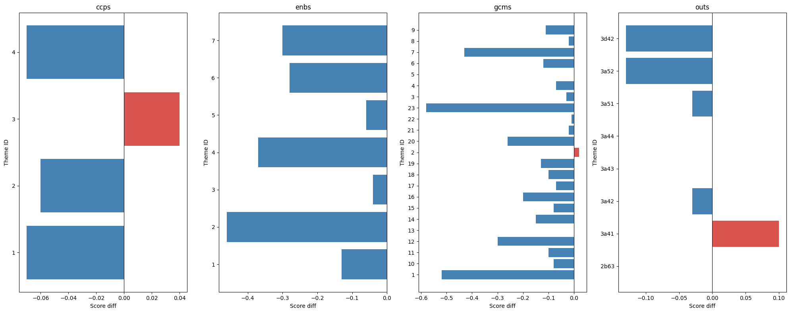
from matplotlib.patheffects import withStroke
fig, axes = plt.subplots(1, df.mapping_type.nunique(), figsize=(20, 8), sharey=False)
for ax, (mt, grp) in zip(axes, df.groupby('mapping_type')):
for _, row in grp.iterrows():
color = 'steelblue' if row.rank_diff < 0 else '#d9534f' if row.rank_diff > 0 else 'grey'
ax.plot([0, 1], [row.rank_old, row.rank_new], marker='o', color=color, alpha=0.7)
mid_y = (row.rank_old + row.rank_new) / 2
offset = -0.15 * row.rank_diff
ax.text(0.5, mid_y + offset, row.theme_id, ha='center', va='center', fontsize=8, fontweight='bold',
color=color, path_effects=[withStroke(linewidth=3, foreground='white')])
ax.set_xticks([0, 1])
ax.set_xticklabels(['Old', 'New'], fontsize=12)
ax.invert_yaxis()
ax.set_title(mt, fontsize=14, fontweight='bold')
ax.set_ylabel('Rank', fontsize=12)
plt.tight_layout()
plt.show()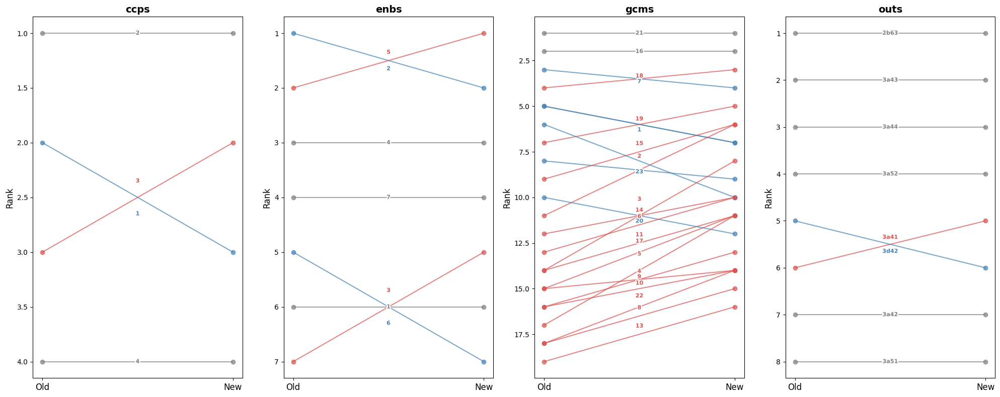
I’ve remapped all $current_res reports, so I can compare mappings for all of them. What kind of questions could we ask? - “does GCM 23 systematically get lower rank on average?”
Scores diff
dfs[(dfs.mapping_type=='gcms') & (dfs.theme_id=='23')].score_diff.hist()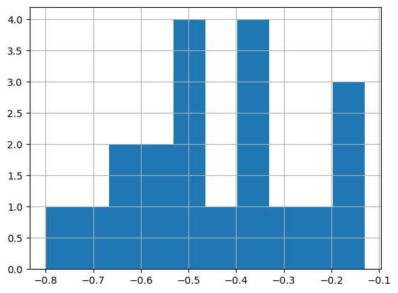
import seaborn as sns, matplotlib.pyplot as plt
gcm_dfs = dfs[dfs.mapping_type=='gcms'].copy()
gcm_dfs['theme_id'] = gcm_dfs['theme_id'].astype(int)
gcm_dfs = gcm_dfs.sort_values('theme_id')
f, ax = plt.subplots(figsize=(14, 6))
sns.violinplot(data=gcm_dfs, x='theme_id', y='score_diff', hue='theme_id', legend=False, bw_adjust=.5, cut=1, linewidth=1, palette="Set3")
ax.axhline(0, color='red', linewidth=0.8, linestyle='--')
ax.set(xlabel='GCM objective', ylabel='score diff (new − old)')
sns.despine(left=True, bottom=True)
plt.tight_layout()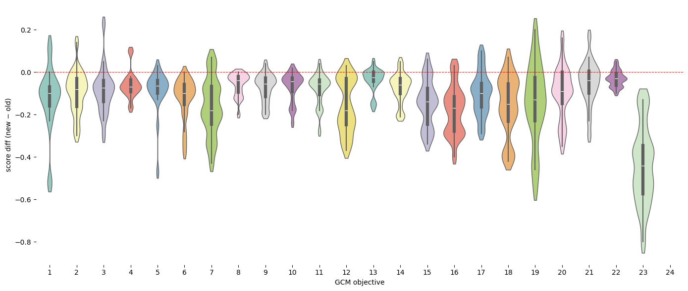
def plot_score_diffs(dfs, mapping_type, xlabel='Theme', col='score_diff'):
"Violin plot of score diffs (new − old) per theme for a given mapping type"
d = dfs[dfs.mapping_type==mapping_type].copy()
d['theme_id'] = d['theme_id'].astype(int)
d = d.sort_values('theme_id')
f, ax = plt.subplots(figsize=(14, 6))
sns.violinplot(data=d, x='theme_id', y=col, hue='theme_id', legend=False, bw_adjust=.5, cut=1, linewidth=1, palette="Set3")
ax.axhline(0, color='red', linewidth=0.8, linestyle='--')
ax.set(xlabel=xlabel, ylabel=f'{col} (new − old)', title=mapping_type)
sns.despine(left=True, bottom=True)
plt.tight_layout()plot_score_diffs(dfs, 'gcms', 'GCM objective')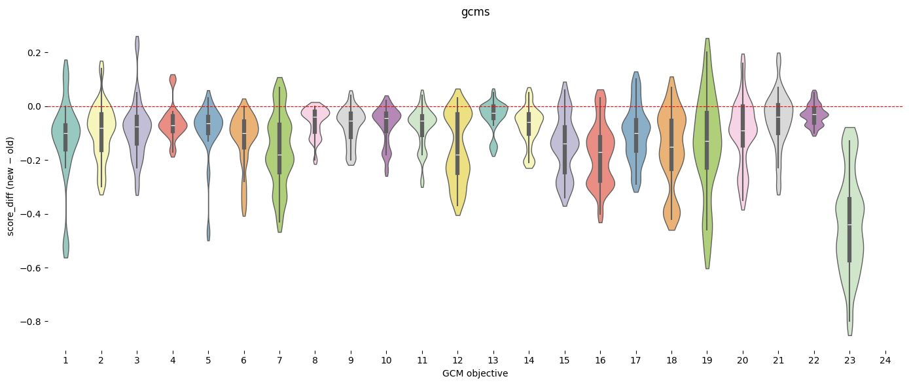
plot_score_diffs(dfs, 'gcms', 'GCM objective')
plot_score_diffs(dfs, 'enbs', 'SRF Enablers')
plot_score_diffs(dfs, 'ccps', 'SRF Cross-Cutting Priorities')
dfs.columnsIndex(['mapping_type', 'theme_id', 'theme_title_x', 'score_old',
'theme_title_y', 'score_new', 'score_diff', 'is_new', 'is_dropped',
'rank_old', 'rank_new', 'rank_diff', 'pct_change'],
dtype='str')Ranks diff
plot_score_diffs(dfs, 'gcms', 'GCM Objectives', col='rank_diff')
plot_score_diffs(dfs, 'enbs', 'SRF Enablers', col='rank_diff')
plot_score_diffs(dfs, 'ccps', 'SRF Cross-Cutting Priorities', col='rank_diff')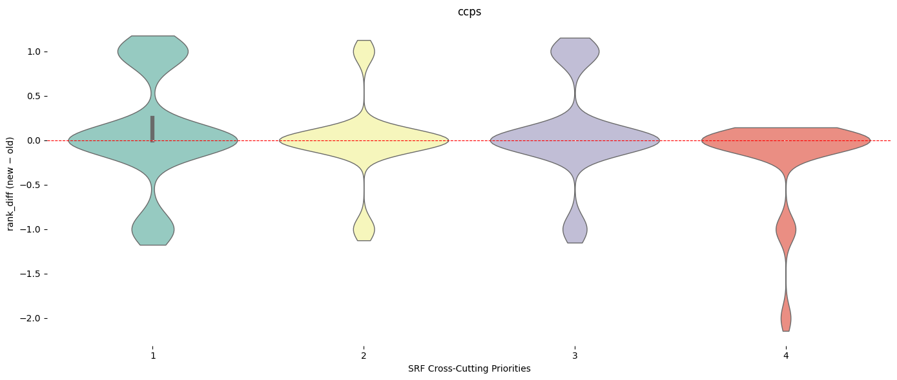
plot_score_diffs(dfs[dfs.rank_old <= 3], 'gcms', 'GCM Objectives', col='rank_diff')Let’s try to answer this question: How often does the top-ranked theme change between old and new?
Reports and mapping type where top ranked theme changed
print(top_changed[top_changed].reset_index()[['eval_id','mapping_type']].sort_values('mapping_type')) eval_id mapping_type
20 4c04ec0d3e651f7616190c6fc2dcfc18 ccps
5 22cac1c000836253adc445993e101560 ccps
18 891448b7a4bf12763ea0579dd67e289d ccps
15 dba9eb1220368d28682d8531108e767d ccps
0 8dd2261100ff5d714e73b411eed043d5 enbs
1 1d7e6d2d445145d1d350b48b72b36681 enbs
2 760568a15e144bcfb88dbbd50247dc51 enbs
21 e21305a89aeb76fafa8f4270392d463a enbs
17 06fd0949dc874f388686461c19d2669c enbs
8 316c47c9dc19c820f3217434d4b93b28 enbs
16 a493c447cff3e03ca94024335d5c5c7a enbs
10 0d4309b702e00faac631be8d609934ce enbs
12 e8d9427f4a9094f68e17307faa567d8b enbs
13 75bad4665ed458cce78740e3d86f72d0 enbs
14 f409b3f9a0671ec69a8591c425a45c1d enbs
11 0d4309b702e00faac631be8d609934ce gcms
9 316c47c9dc19c820f3217434d4b93b28 gcms
6 22cac1c000836253adc445993e101560 gcms
3 760568a15e144bcfb88dbbd50247dc51 gcms
22 e21305a89aeb76fafa8f4270392d463a gcms
7 22cac1c000836253adc445993e101560 outs
19 891448b7a4bf12763ea0579dd67e289d outs
4 760568a15e144bcfb88dbbd50247dc51 outs
23 e21305a89aeb76fafa8f4270392d463a outsdef plot_rank_changes(df):
"Slope chart of rank changes (old → new) per mapping type, coloured by direction"
fig, axes = plt.subplots(1, df.mapping_type.nunique(), figsize=(20, 8), sharey=False)
for ax, (mt, grp) in zip(axes, df.groupby('mapping_type')):
for _, row in grp.iterrows():
color = 'steelblue' if row.rank_diff < 0 else '#d9534f' if row.rank_diff > 0 else 'grey'
ax.plot([0, 1], [row.rank_old, row.rank_new], marker='o', color=color, alpha=0.7)
ax.text(0.5, (row.rank_old + row.rank_new) / 2 + (-0.15 * row.rank_diff), row.theme_id,
ha='center', va='center', fontsize=8, fontweight='bold', color=color,
path_effects=[withStroke(linewidth=3, foreground='white')])
ax.set_xticks([0, 1])
ax.set_xticklabels(['Old', 'New'], fontsize=12)
ax.invert_yaxis()
ax.set_title(mt, fontsize=14, fontweight='bold')
ax.set_ylabel('Rank', fontsize=12)
plt.tight_layout()
plt.show()#dfs[dfs.eval_id == '0d4309b702e00faac631be8d609934ce']plot_rank_changes(dfs[dfs.eval_id == '0d4309b702e00faac631be8d609934ce'])
def info_eval(evl_id):
return first([o for o in evals if o.id == evl_id])info_eval('0d4309b702e00faac631be8d609934ce')Fifth Evaluation of the IOM Development Fund
Year: 2025 | Organization: IOM | Countries: Worldwide
Documents: 5 available
ID: 0d4309b702e00faac631be8d609934ce
def plot_score_diffs_bar(df):
"Bar chart of score diffs (new − old) per theme, coloured by direction, faceted by mapping type"
fig, axes = plt.subplots(1, df.mapping_type.nunique(), figsize=(20, 8), sharey=False)
for ax, (mt, grp) in zip(axes, df.groupby('mapping_type')):
ax.barh(grp.theme_id.astype(str), grp.score_diff, color=['#d9534f' if x > 0 else 'steelblue' for x in grp.score_diff])
ax.axvline(0, color='black', linewidth=0.8)
ax.set(title=mt, xlabel='Score diff', ylabel='Theme ID')
plt.tight_layout()
plt.show()plot_score_diffs_bar(dfs[dfs.eval_id == '0d4309b702e00faac631be8d609934ce'])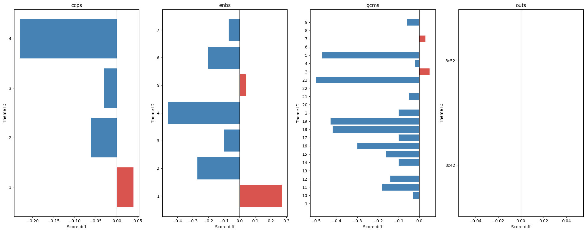
def plot_scores_comparison(df, eval_id, mapping_type):
"Grouped bar chart of old vs new scores per theme for a given report and mapping type"
title = info_eval(eval_id).meta['Title']
title_pretty = title if len(title) < 80 else title[:80] + '...'
d = df[(df.eval_id==eval_id) & (df.mapping_type==mapping_type)].copy()
d['theme_id'] = d['theme_id'].astype(int)
d = d.sort_values('theme_id')
x = range(len(d))
f, ax = plt.subplots(figsize=(14, 5))
ax.bar([i-0.2 for i in x], d.score_old, width=0.4, label='old', color='steelblue', alpha=0.8)
ax.bar([i+0.2 for i in x], d.score_new, width=0.4, label='new', color='#d9534f', alpha=0.8)
ax.set_xticks(list(x))
ax.set_xticklabels(d.theme_id)
ax.set(xlabel='Theme ID', ylabel='Score', title=f'{mapping_type} — {title_pretty}')
ax.legend()
plt.tight_layout()plot_scores_comparison(dfs, '316c47c9dc19c820f3217434d4b93b28', 'gcms')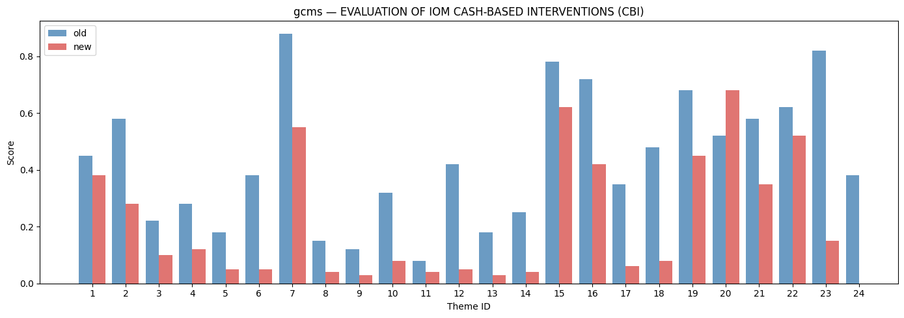
plot_scores_comparison(dfs, '316c47c9dc19c820f3217434d4b93b28', 'enbs')
df_top_changed = top_changed[top_changed].reset_index()[['eval_id','mapping_type']]for id_ in df_top_changed[df_top_changed.mapping_type == 'gcms'].eval_id:
plot_scores_comparison(dfs, id_, 'gcms')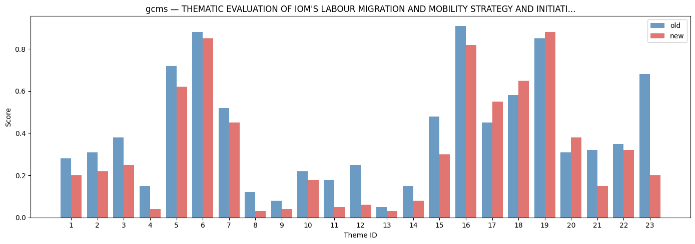
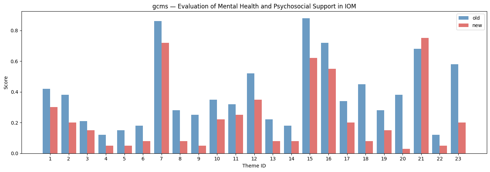

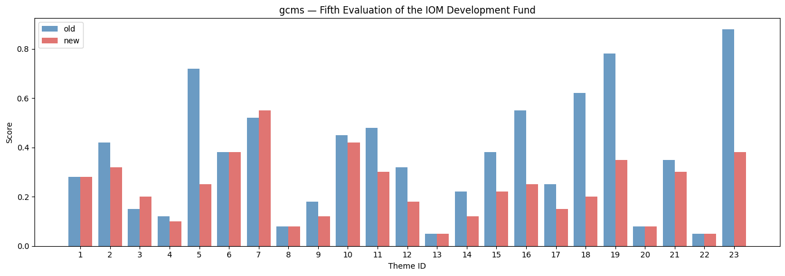

for id_ in df_top_changed[df_top_changed.mapping_type == 'enbs'].eval_id:
plot_scores_comparison(dfs, id_, 'enbs')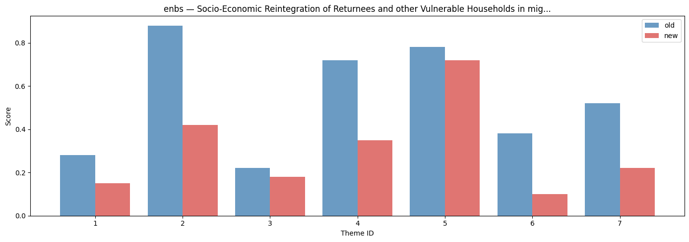

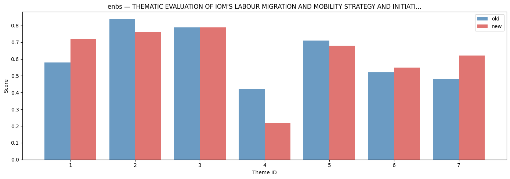


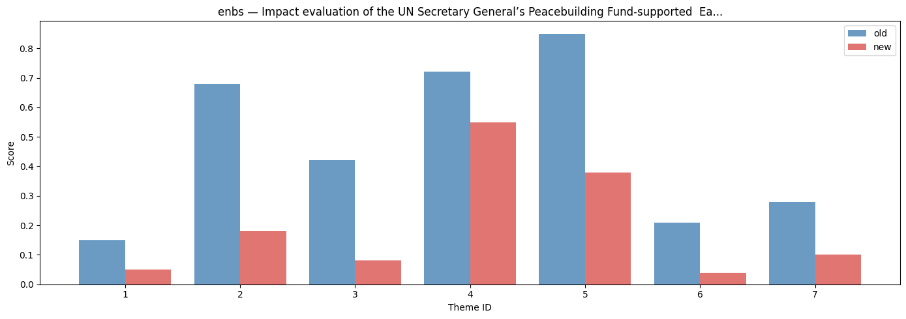

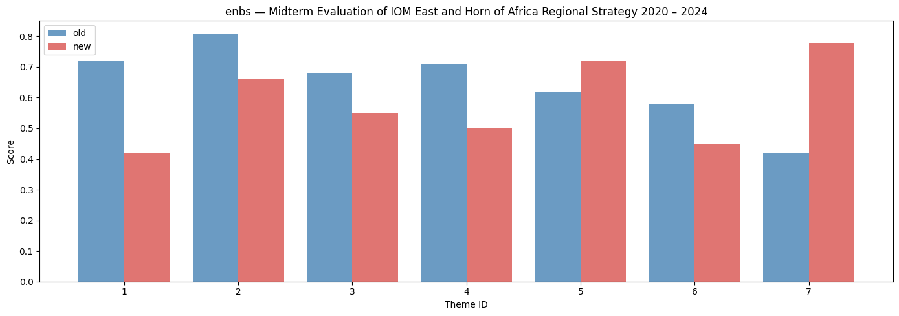


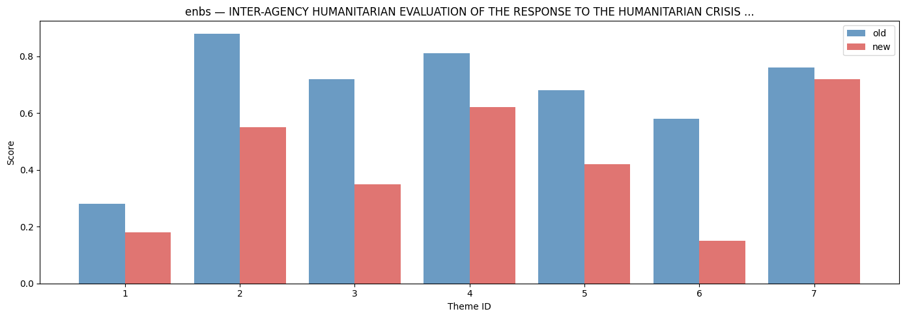
for id_ in df_top_changed[df_top_changed.mapping_type == 'ccps'].eval_id:
plot_scores_comparison(dfs, id_, 'ccps')
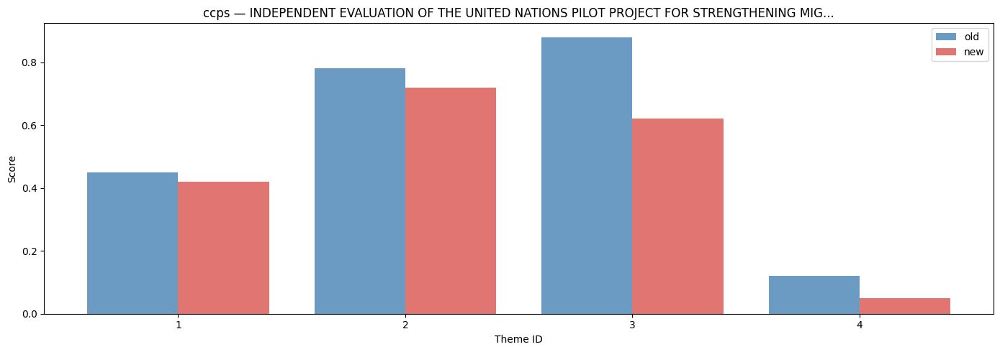
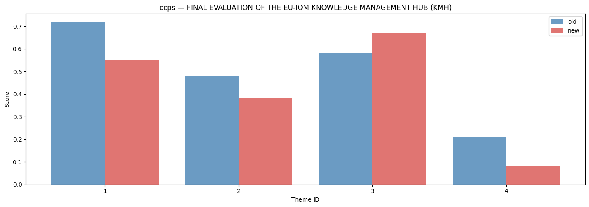
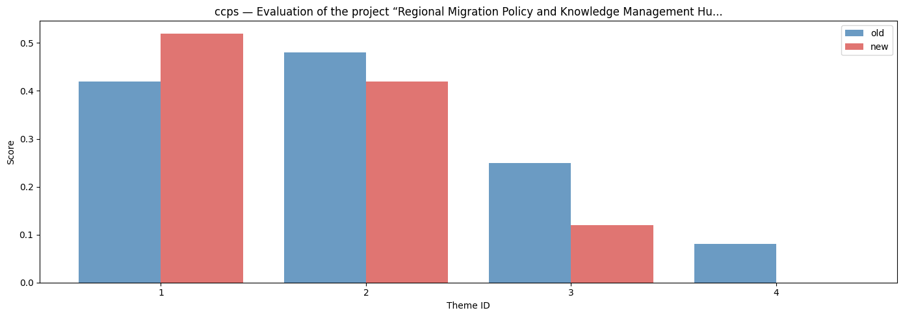